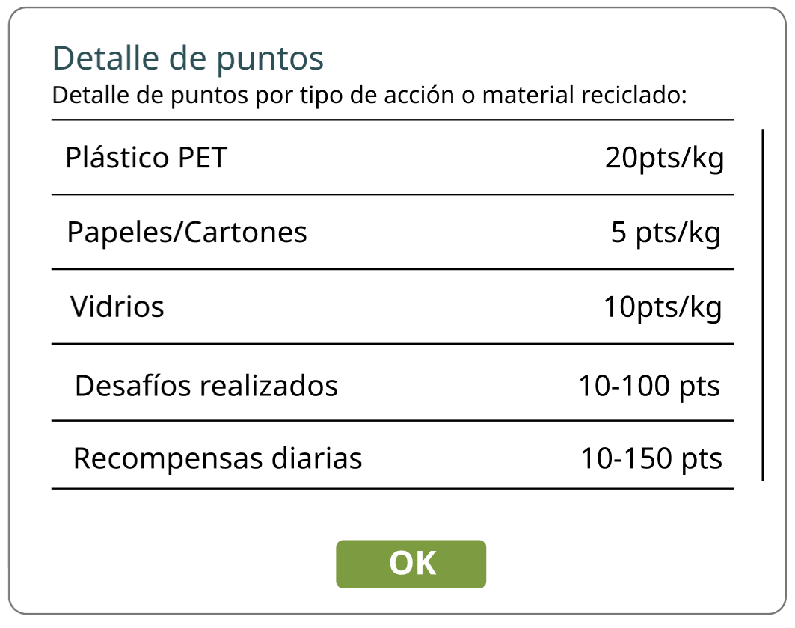
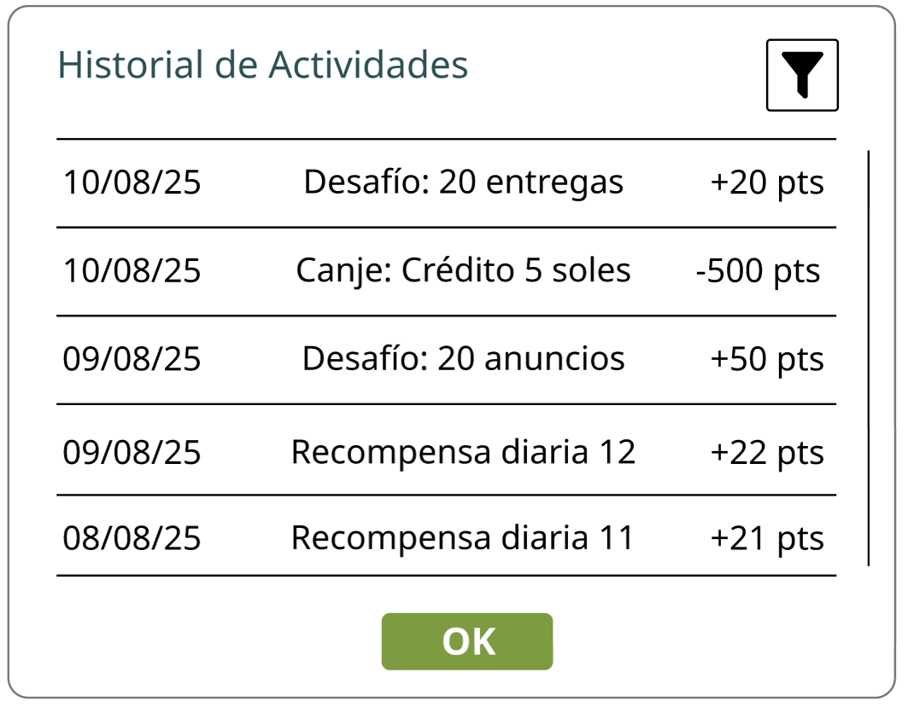

Mensaje de Puntos por Desafío Completado
Beneficios
En QhuriNet premiamos tu compromiso con el planeta.
Cada vez que completes entregas, publiques materiales o alcances metas, ganarás puntos que podrás ver en tu Historial de Actividades.
También puedes obtener bonos diarios, mantener rachas de uso y participar en desafíos semanales para sumar aún más. Luego, canjea tus puntos en la Tienda de puntos por beneficios como prioridad en publicaciones, créditos dentro de la app o certificados ecológicos. Tu esfuerzo por reciclar y ayudar al medio ambiente merece reconocimiento.
¡Sigue sumando y forma parte de nuestra comunidad sostenible!
Recordatorios y logros al día
QhuriNet te permite ver si tu recompensa diaria está disponible, tu racha activa y el avance de tus desafíos. Cuando completas un logro o desbloqueas una recompensa, recibes una notificación inmediata para decidir si deseas canjearla o seguir acumulando.
También puedes revisar si ya reclamaste la recompensa del día y conocer el progreso de cada desafío en tiempo real.
Mensaje de Recompensa Disponible
Puntuaciones dinámicas y valor de tus puntos
El historial de incentivos de QhuriNet reúne tus entregas, canjes, desafíos y recompensas en un solo lugar. Cada acción registra fecha, tipo y puntos, para que sigas fácilmente la evolución de tu participación.

Historial de Actividad e Incentivos
Podrás revisar tus canjes, recompensas y desafíos completados con fecha y puntos ganados u usados, y filtrar por tipo de actividad para llevar un control claro de tu progreso.
